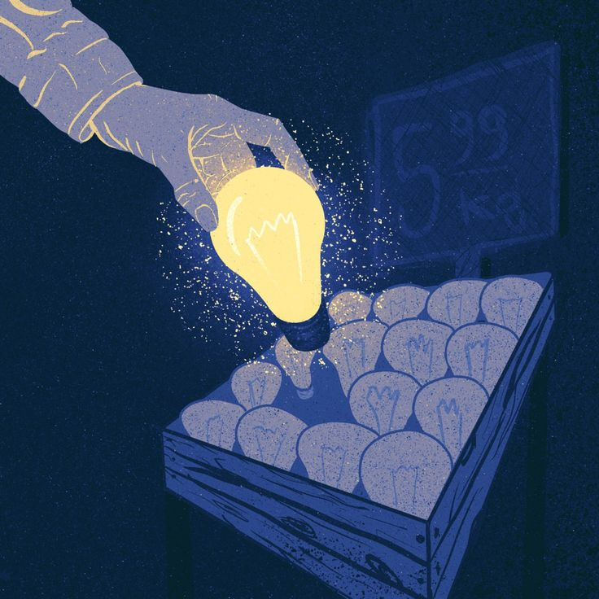
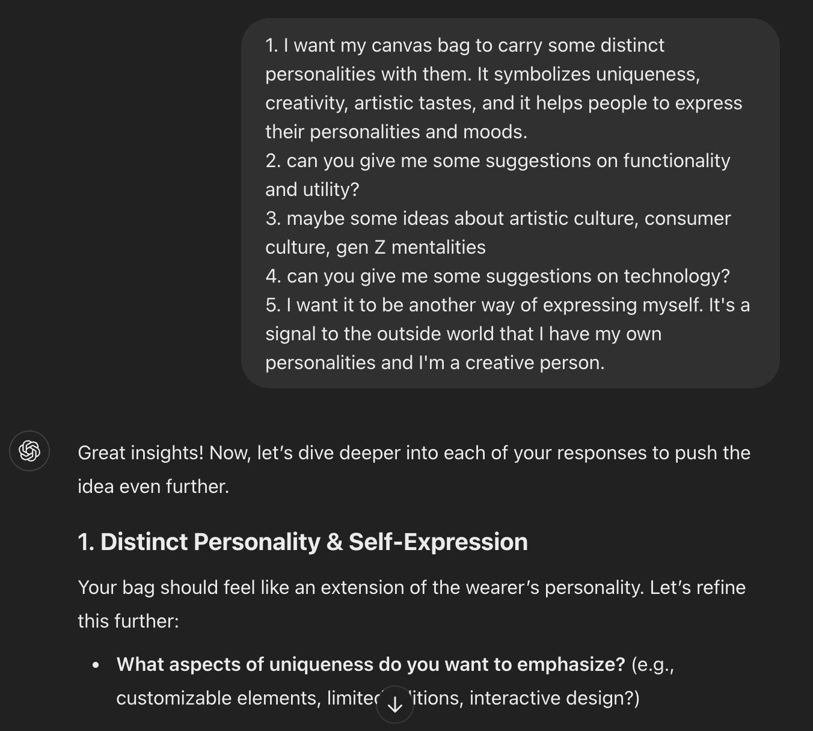
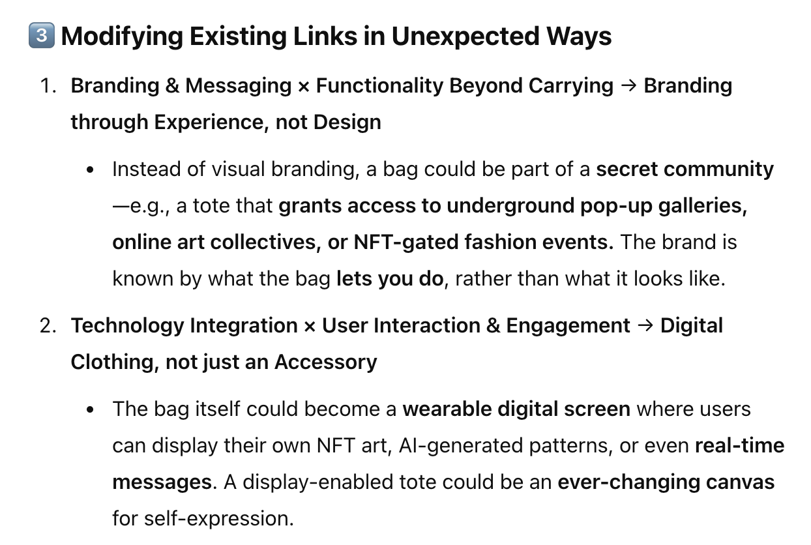
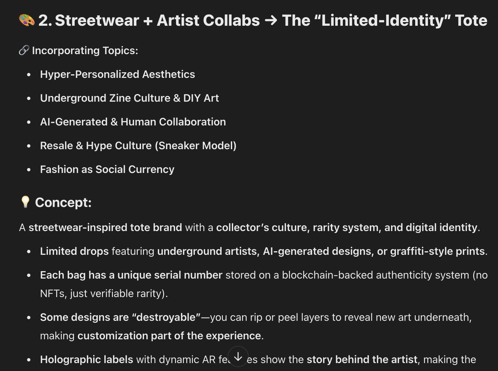
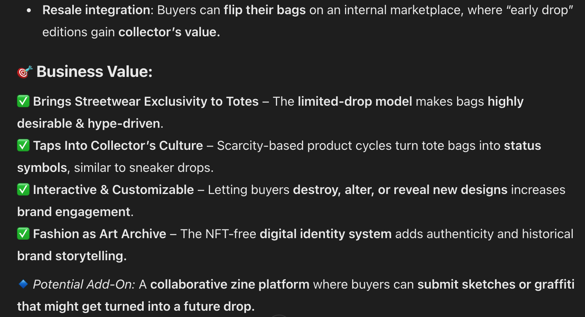
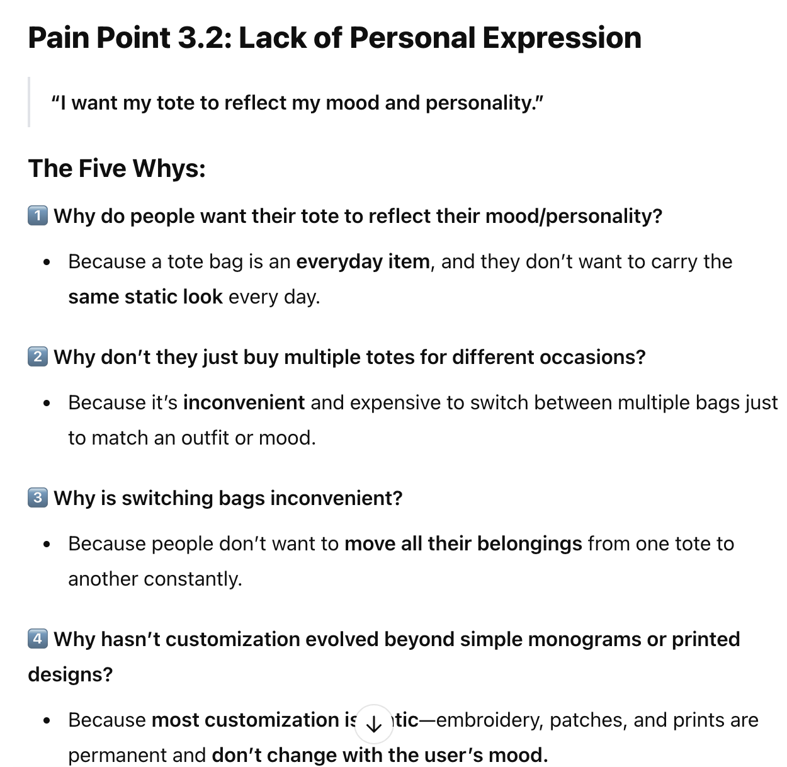

The Design Thinking Method
Every creative process follows a pattern. The renowned design agency IDEO was instrumental in evangelizing this Design Thinking method, a method now widely used by creative agencies and tech companies during the design stage. This approach helps break down any seemingly intricate problems into solvable steps.
Therefore, when trying to standardize the idea generation process, I brought back this classic technique. As an ideation tool, this product currently does not include the prototype and test phases. However, the steps of empathize, define, and ideate can be effectively replicated within an LLM. By incorporating Artificial Intelligence, I want to see it bring in its own strengths and empower humans to ideate more wisely. 
Experimentation with different approaches
To start with, I explored different possible templates for ideating. To test their effectiveness, I used the same prompt to initiate an ideating process and compared the quality of various ideas across different trial runs.
Here’s my base prompt:
I want to come up with a profitable product idea. You are my partner, an extremely creative entrepreneur who had successfully designed and built many commercial products, to help me to generate the ideas.
Here’s the context: I want to design a new type of canvas bag (tote bag) that redefine this product. The product will target 18-35 years old female consumers. The “redefine” can be on a design and aesthetic level, functional level, semantic level (ie. carry some special meaning), branding level, or even combining some technology innovations. I want the ideas to be bold and innovative.
Solution 1: Question-inspired ideating
Ask GPT to generate a set number of thought-provoking questions on a given topic. Users then provide responses, which serve as a secondary input for GPT to generate follow-up questions.
Added prompt:
I want you to do the following: Ask me 5 thought-provoking questions that you think might be inspiring, formatted in “keywords: questions”. Based on each of my response, you will ask at least 2 follow-up questions. The questions can be about the context, my personal experience, creative process, interdisciplinary fields, or any aspects that you think might help with the idea generation in the context I provided above.
Overall, our conversation followed a structured question-and-answer pattern. After five rounds of Q&A, we successfully developed three high-quality ideas that I’m very satisfied with. By round three, GPT started introducing key keywords that played a crucial role in shaping our final concepts. By round four, a rough idea had already taken form, and we focused on refining it—polishing details, selecting the strongest elements, and discarding others.
Here are some insights about the question-inspired ideating:
- The strucutre of follow-up questions + idea suggestions works well: The quality of ideas significantly improved by round three, when quick suggested ideas were provided alongside the questions. More than half of my ideas were sparked by keywords in GPT’s responses. This suggests that incorporating suggested directions as helper text within the Q&A structure could further enhance the ideation process.
- Keywords are more valuable than sentences: I realized that our Q&A process was unnecessarily long, making it inefficient in terms of both time and computing power. Many responses contained “filler” sentences that weren’t directly relevant to the core ideas. Instead, a few keywords or concise sentences would be sufficient for each point.
- Details need human input to build up: GPT is good at solving challenges. Specific, detailed ideas came up the fastest when I described my vision and left GPT determine how to achieve it.
- Repetitive ideas still exist: Another factor contributing to the lengthy responses was the repetition of ideas. Real-time evaluation is crucial to prevent non-valuable ideas from reappearing in subsequent responses.

Solution 2: Attributes-driven ideating
Ask GPT to identify a set number of primary attributes or components of a given product. Then, prompt it to add, remove, or modify the connections between these attributes to generate new product ideas.
Added prompt:
I want you to do the following: Identify a set number of (both external and internal) attributes or components of canvas bag. Later in our conversation, I’ll prompt you to identify the links between those attributes or components, and generate innovative ideas by modifying, adding, or removing those links.
For example, primary attributes or components of a pizza include ingredients, flavor, size, temperature, price, packaging, and brand.
Once I got the list of attributes, I sent out a more specific instructions on how to add, remove, and motify the product configuration chart.
Now I want you to: 1. Combine seemingly unrelated attributes, such as shape × branding or material × cultural and social meaning. For each pair, write a short paragraph explaining how these attributes might interact in a unique way. 2. Remove attributes that seem essential or question underlying assumptions. For example, does the material have to be canvas? Can branding exist without any visible logos or signals? 3. Change the nature of certain connections and reinterpret their meanings. For each part, generate five distinct suggestions with clear explanations. Once we have these, we’ll work together to refine and explore some of them in greater depth.
The ideas generated using these prompts turned out to be bolder and more unconventional, but also less realistic and harder to implement with current materials and technology.

Some insights about the attributes-driven ideating:
- Balancing the originality and feasibility: Attribute-driven ideation allows LLMs to fully leverage their creativity by combining seemingly incompatible aspects. However, this prompting strategy can be tricky to use, as many generated ideas may be impractical and ultimately deemed non-valuable by the prompter. To solve this problem, attributes-driven ideating needs to be used cautiously along with the question-inspired ideating.
- Less user input is needed: Compared to question-inspired prompting strategy, attributes-driven ideating requires less human input. This implies a lower cognitive load for users, while also introduces more uncertainty as there is less human oversight in guiding the ideas.
Solution 3: Interdisciplinary ideating
Ask GPT to generate moderately relevant interdisciplinary subjects and topics. Then, prompt it to strategically merge concepts from different domains, providing inspiration for humans to develop new ideas.
Added prompt:
I want you to do the following: Generate 10 moderately relevant interdisciplinary topics centered around culture, creativity, art, and Gen Z personality expression. Then, strategically merge each concept with canvas bags (tote bags) to create innovative product ideas.
For each idea, provide a short paragraph explaining how the concepts integrate and how they generate business value.
Ideating with LLMs is a process of fine-tuning the model’s output to align ideas more closely with your desired direction. Encouraging LLMs to generate loosely relevant keywords has proven highly effective. I typically select 2–3 keywords from each idea and prompt the model to elaborate only on those details. This approach functions like a funnel, gradually narrowing broad concepts into specific, niche ideas.
The format of each response wasn’t fully settled. But the structure of “incorporating topics” + “concepts” + “business values” proved to be a helpful and comprehensive format. Currently, LLM still tends to wrap more-than-needed details and options in its response, which can easily lead to information overload. Controlling the amount of information released and ensuring that only the most useful insights are presented is one of the major challenges.
 
Some insights about the interdisciplinary ideating:
- This approach is effective only when interdisciplinary concepts align with the intended scope: Concept merge can be very arbitrary, and most arbitraty ideas are not of high value. Setting clear path for LLMs to follow is a necessary step early in the ideating session.
- Responses are easier to control than attributes-driven approach: Similar to the previous approach, interdisciplinary ideation requires relatively less human input, primarily involving the selection and integration of independent concepts. However, responses generated through this method are more likely to be relevant and implementable, as long as a proper direction has been established.
Solution 4: Imagenary-customer-prompted ideating
Ask GPT to take on the perspective of customers and generate hypothetical feedback on the product. Use this feedback as inspiration to refine existing ideas or develop new ones.
Added prompt:
I want you to do the following: put yourself in the shoes of 18-35 years old female consumers and generate 5 customer feedback on the product. Using this feedback, summarize the pain point and its root cause. Then, based on each point, briefly explain the reason and your suggested directions to solve them. At this stage, the suggested directions don’t have to be detailed and very specific.
Talking to customers and gathering their feedback is always the first step in brainstorming. Here, I experimented with using LLMs to generate hypothetical customer feedback and then prompted it to respond to its own feedback with potential solutions.
The advantage of this approach is that ideation begins with a clear direction, and the ideas generated are more likely to resonate with customers since they directly address pain points. To explore root causes, I used the “5 Whys” technique. However, at this stage, the LLM’s ability to apply the “5 Whys” effectively is still quite limited. With further training on instructions and data, this technique could become a valuable tool in identifying pain points during the ideation process.

As seen in the conversation, this method allows us to dive into the topic quickly, improving efficiency compared to previous trials that required exploring multiple directions before finding a suitable one. However, the trade-off is that the ideas tend to become predictable, as they are solutions that an average person could easily come up with.
Some insights about the imagenary-customer-prompted ideating:
- More suitable for technical problem statements than creative ones: Thanks to its ability to pinpoint root causes, this prompting technique is most effective for solving technical problems but falls short when tackling creativity-driven challenges.
- Works best when incorporating other prompting techniques: The ideas generated are precise and feasible but lack originality. However, this drawback can be effectively addressed by integrating it with interdisciplinary prompting.